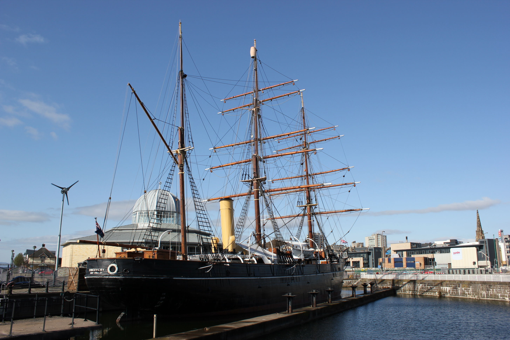
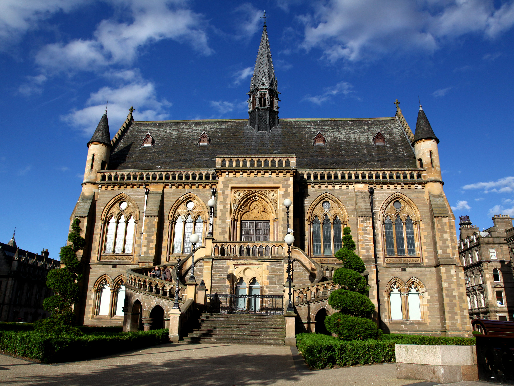

The RRS Discovery
|  |
|---|
Built in Dundee in 1901, the RRS Discovery took Captain Scott and his crew to Antartica for scientific research.1 Today you can visit the Discovery Point at the Waterfront which is where the ship (which can be entered) and a museum (with more information about the ship and the crews expedition) is located.2
The HMS Unicorn
 |
|---|
One of the oldest warships in the world. The HMS Unicorn is also the only preserved warship in Scotland. The HMS Unicorn is also used to host various events such as ceilidhs and plays.3 There are four amazingly well preserved decks to explore:
- The upper deck
- The gun deck featuring 28 large cannons
- The lower deck featuring the wardroom and the officers' cabins
- And finally, the orlop - where the ship's cargo was held4
|  |
|---|
The McManus
An art gallery and a museum. There are eight galleries (the eigth gallery is an exhibit that changes regularly, click here to see the current exhibit) over two floors:5
-
20th Century Gallery
A collection of 20th century artwork that changes annually6 -
Landscapes and Lives
Features taxidermied animals that used to live in and around Dundee. Also features pieces from early man such as Pictish Stones and a Log Boat from King Crispin's Parade7 -
What is a Museum
A gallery featuring objects and art reflecting both Dundee and the world around its people, culture and environment8 -
Victorian Gallery
A gallery of authentic Victorian era artwork9 -
The Long Gallery
A gallery that focuses on studio ceramics from Dundee10 -
Here and Now
The pieces in this gallery are temporary or from exhibtions that are on tour. Most of the pieces are contemporary arts and crafts but other subject areas are occasionally featured too.11 -
Dundee and the World
A collection of international pieces. The exhibits are split into four themes:- Military
- Missionary
- Merchant
- Mystery12
 |
|---|
The V&A Museum
Dundee's design museum. The museum itself was designed by the award-winning architect Kengo Kuma, who also designed the 2020 Tokyo Olympics stadium.13 The exhibits change regularly, click here to see what's currently on. Previous exhibits include:
- Scottish Design Relay
- Ocean Liners: Speed and Style
- Hands of X: Design Meets Disability14